01
Recon run
Send it down a corridor or into a collapsed void on a routine that keeps running even if the link drops.
A recon rover for places people should not enter. It drives in, looks around, and reports back out loud.
The run
One operator, one screen. The rover does the walking into the part nobody wants to walk into.
Send it down a corridor or into a collapsed void on a routine that keeps running even if the link drops.
Distance, temperature, humidity and heading stream back the whole way, alongside the camera feed.
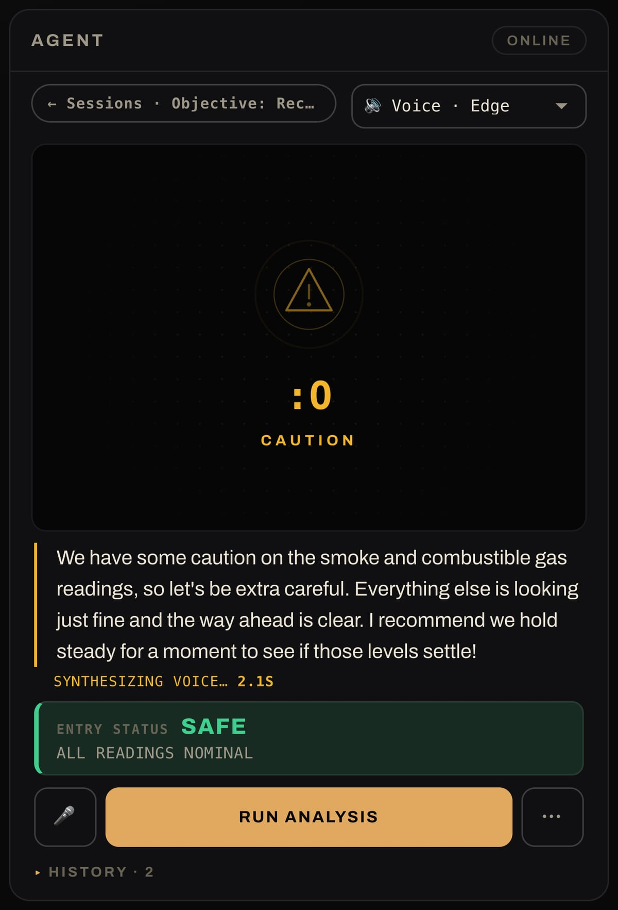
The onboard voice names what the camera is looking at, out loud, in English or Spanish.
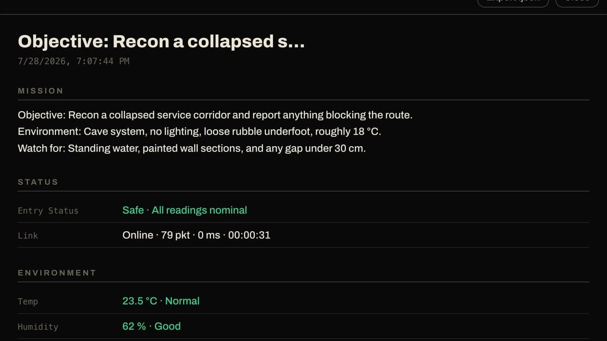
Anything worth a second look is saved with its frame, so the run can be walked back through afterwards.
Saved framesDrag or scroll sideways →
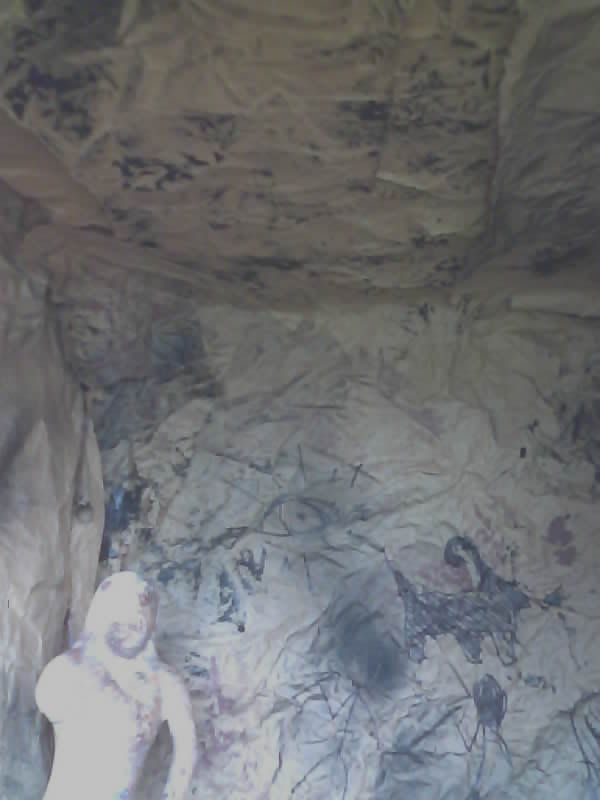
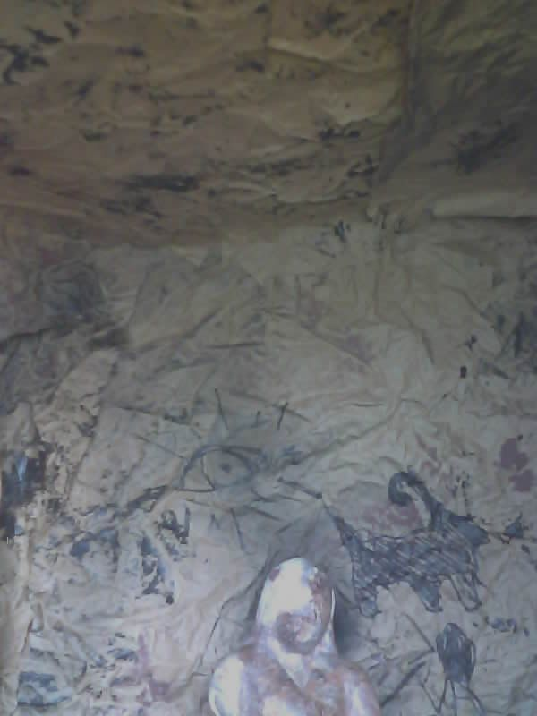
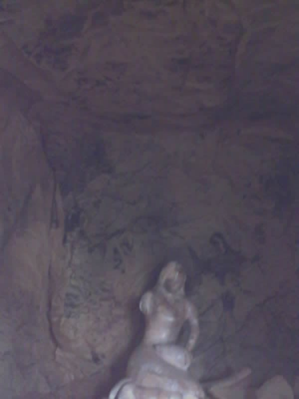
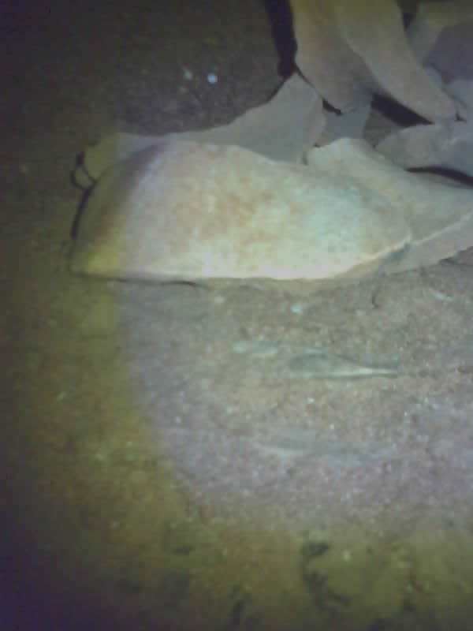
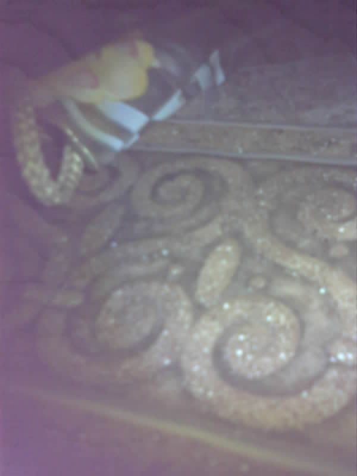
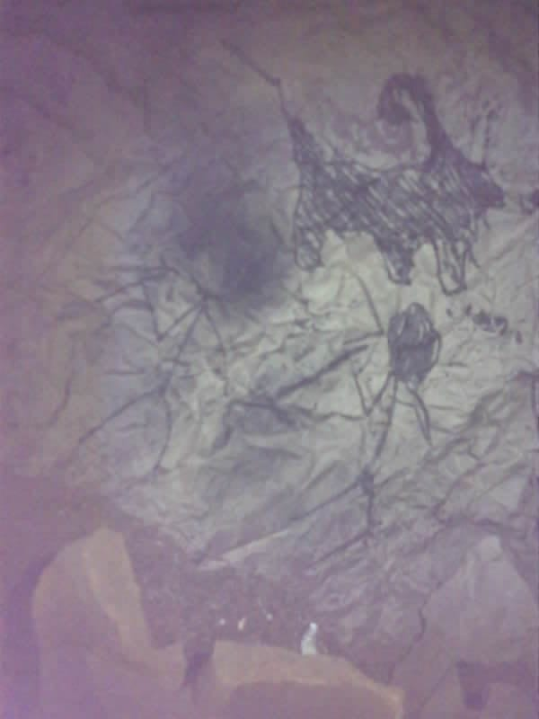
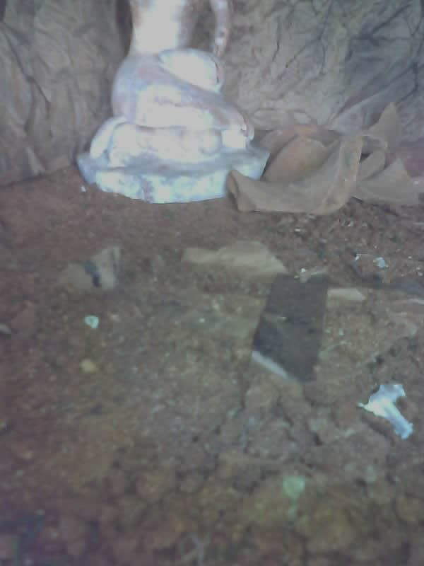
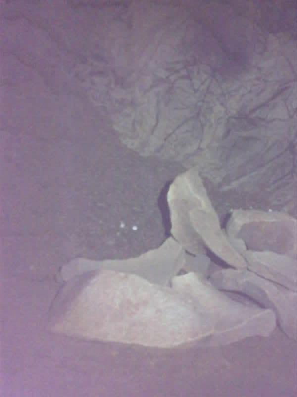
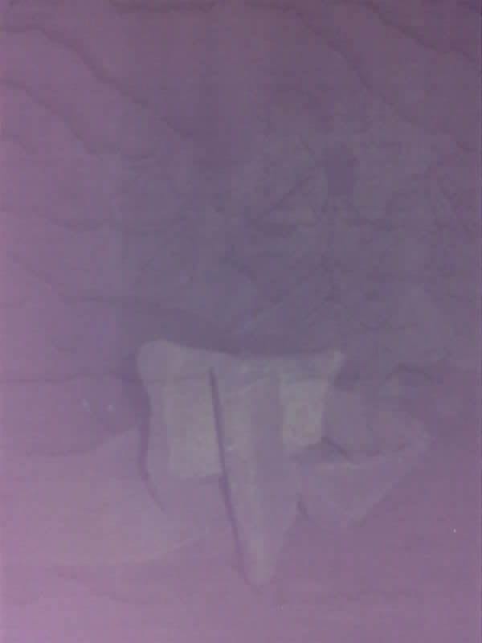
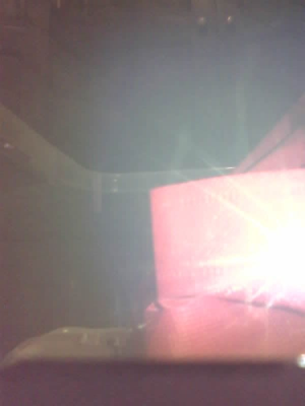
Pricing
Every Blackout is built, wired, flashed and tuned by us, running our own software. You unbox it and send it in.
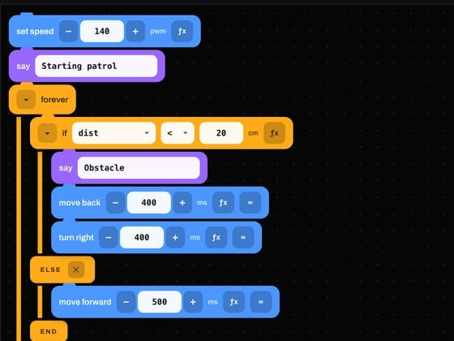
Competition fiction: Blackout is a WRO 2026 Future Innovators project, not a company. The prices above are part of the pitch. Nothing here is for sale, and the robot, the code and the camera frames are real.
Model Library
The rover is never finished — each build throws away something the one before it was proud of. Open a model to read its file.
Sponsors
All the ranks Want a slot? Talk to the team.
The dark part of the map is the part worth looking at.
Get Blackout